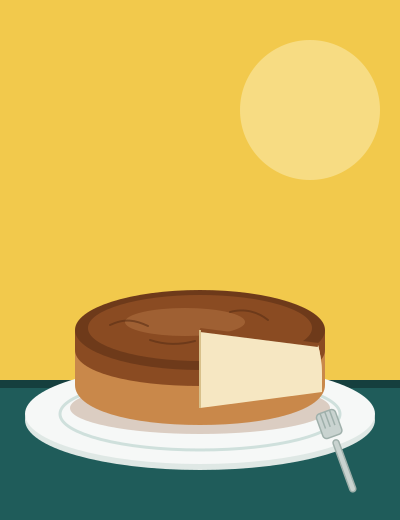

Welcome to My Kitchen: My Baking and Cooking Hobby
Hi! I love baking and cooking during my free time, and this website is where I share what I've made. I don't have a famous chef I follow or any professional training. I just watch videos, find a dessert or a dish that looks good (with the help of the YouTube algorithm), and decide to make it. I enjoy picking something I've never tried before if it looks good, so every new recipe feels like a small challenge.
I got into this because when I was in elementary school, I read a book that included baking (I think it was The Power of Poppy Pendle by Natasha Lowe) and wanted to try it. I started with cookies (but it turned rock hard after a while). Afterwards, I really got interested in cooking and baking during the COVID-19 pandemic. I started with chocolate chip cookies and then moved on to other desserts, like cheesecakes. I also like to make savory meals, and I enjoy trying to mix flavors from different dishes into one. Baking is fun because you have to follow the steps carefully, and it feels great when it turns out right and cooking is fun in a different way, because you can taste as you go and change things to your liking.
Some of the things I've made so far are brown butter chocolate chip cookies, Basque cheesecake, New York style cheesecake, and a yakisoba inspired pasta. The cookies and the cheesecakes taught me that baking takes patience and attention to detail. The pasta was a fun one because I wanted to mix the flavors of two different kinds of dishes into one.
I'm not an expert, and not everything turns out perfect. That's part of why I enjoy it. If you like food too, take a look at the next page to see more of what I've made.
